Classification: B (HIGH) · new_status: VALID_MEMBER_NOW_VISIBLE
Old gold: NO_VALID_MEMBER · G9: ASSOCIATED ·
selected: rnd_raw_p8_1260_a31b1adb0cdb ·
best: rnd_raw_p8_1260_a31b1adb0cdb
Label sits on the W21X50 girder; G8 reclass_restore recovers the under-label stroke previously classified as dimension. Old gold overlays were distant infill/stair, not this girder.
Horizontal W21X50 text rests on the recovered horizontal girder stroke (G9 green).
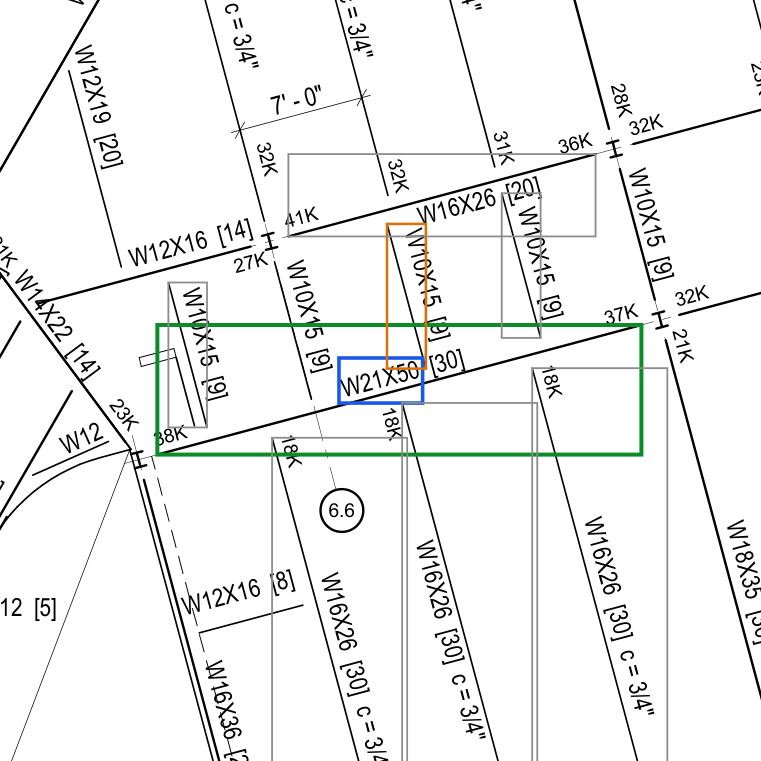
| ID | kind | derivation | len | dist | rank | score |
|---|---|---|---|---|---|---|
| rnd_raw_p8_1260_a31b1adb0cdb | LINE_MEMBER_CANDIDATE | reclass_restore | 250.564 | 0.0 | 1 | 0.8696 |
| rnd_raw_p8_1330_8069b8cef64a | LINE_MEMBER_CANDIDATE | reclass_restore | 261.015 | 0.0 | 3 | 0.6969 |
| rnd_raw_p8_1328_27999919be3c | LINE_MEMBER_CANDIDATE | cap_restore | 74.926 | 0.0 | 2 | 0.7682 |
| rnd_raw_p8_1331_30f351be6ccf | LINE_MEMBER_CANDIDATE | reclass_restore | 261.015 | 17.36 | 4 | 0.6469 |
| rnd_raw_p8_1329_33db0f29cdc8 | LINE_MEMBER_CANDIDATE | reclass_restore | 261.015 | None | None | None |
| rnd_raw_p8_1296_4f4b33f9373b | LINE_MEMBER_CANDIDATE | reclass_restore | 159.019 | 60.79 | 8 | 0.4416 |
| rnd_raw_p8_1327_7e831bb3d961 | LINE_MEMBER_CANDIDATE | cap_restore | 74.926 | 40.802 | 6 | 0.4616 |
| rnd_raw_p8_1367_4908eae79b6f | LINE_MEMBER_CANDIDATE | cap_restore | 75.011 | None | None | None |
| rnd_raw_p8_1366_d84aae2fd2ee | LINE_MEMBER_CANDIDATE | retained_member | 110.058 | 51.905 | 5 | 0.4675 |
| rnd_raw_p8_1485_156e44d25c24 | LINE_MEMBER_CANDIDATE | retained_member | 173.049 | None | None | None |
| rnd_raw_p8_1258_8d163128890a | LINE_MEMBER_CANDIDATE | reclass_restore | 254.437 | None | None | None |
| rnd_raw_p8_1029_af4000b1c875 | LINE_MEMBER_CANDIDATE | reclass_restore | 290.558 | 37.555 | 7 | 0.4604 |
Classification: B (HIGH) · new_status: VALID_MEMBER_NOW_VISIBLE
Old gold: NO_VALID_MEMBER · G9: ASSOCIATED ·
selected: rnd_raw_p8_1274_e21a18219b27 ·
best: rnd_raw_p8_1274_e21a18219b27
Label sits on the upper W21X44 girder. Under-label raw was a leader stub; G8 neighborhood reclass recovers the girder segment G9 selected.
On-label girder geometry now present; old candidates were giant bay/EJ wall.
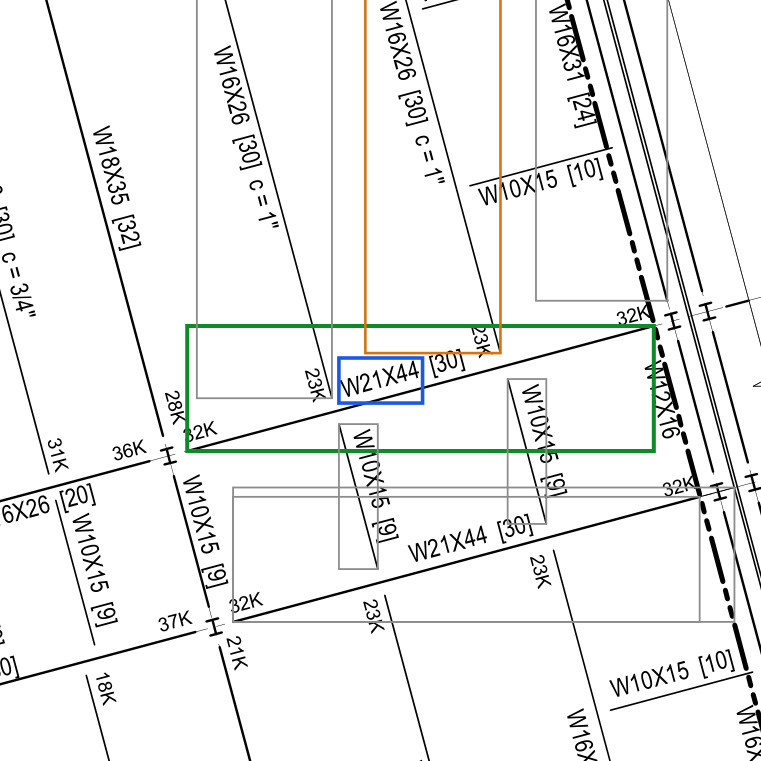
| ID | kind | derivation | len | dist | rank | score |
|---|---|---|---|---|---|---|
| rnd_raw_p8_1274_e21a18219b27 | LINE_MEMBER_CANDIDATE | reclass_restore | 241.512 | 0.0 | 1 | 0.8711 |
| rnd_raw_p8_1285_cba42058a285 | LINE_MEMBER_CANDIDATE | reclass_restore | 261.015 | 3.46 | 4 | 0.6544 |
| rnd_raw_p8_1287_18ba2761eddd | LINE_MEMBER_CANDIDATE | cap_restore | 75.042 | 10.52 | 3 | 0.7002 |
| rnd_raw_p8_1284_2ab7f6b159ec | LINE_MEMBER_CANDIDATE | reclass_restore | 261.015 | 2.47 | 2 | 0.7232 |
| rnd_raw_p8_1286_88fce0a03302 | LINE_MEMBER_CANDIDATE | cap_restore | 75.011 | 42.55 | 7 | 0.4546 |
| rnd_raw_p8_1277_737c2c6faef8 | LINE_MEMBER_CANDIDATE | reclass_restore | 259.531 | 42.2 | 5 | 0.5206 |
| rnd_raw_p8_1275_09a4936ab405 | LINE_MEMBER_CANDIDATE | reclass_restore | 241.512 | 46.88 | 6 | 0.5008 |
| rnd_raw_p8_1364_9d12024059aa | LINE_MEMBER_CANDIDATE | reclass_restore | 253.679 | 63.527 | 8 | 0.35 |
Classification: B (HIGH) · new_status: VALID_MEMBER_NOW_VISIBLE
Old gold: NO_VALID_MEMBER · G9: ASSOCIATED ·
selected: rnd_raw_p8_1284_2ab7f6b159ec ·
best: rnd_raw_p8_1284_2ab7f6b159ec
Label sits on W16X26 joist; G8 reclass_restore recovers the on-label joist previously treated as dimension. Old overlays were EJ wall / wall beam.
Selected stroke coincides with the labeled joist path.
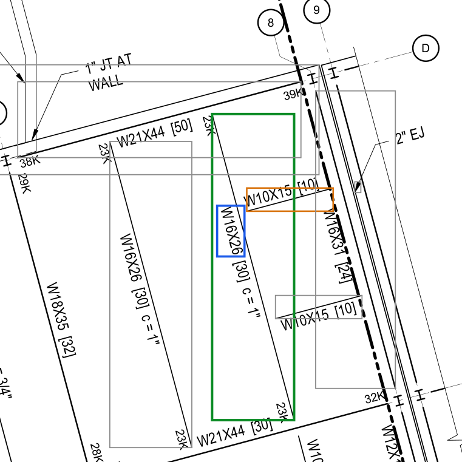
| ID | kind | derivation | len | dist | rank | score |
|---|---|---|---|---|---|---|
| rnd_raw_p8_1284_2ab7f6b159ec | LINE_MEMBER_CANDIDATE | reclass_restore | 261.015 | 0.0 | 1 | 0.8387 |
| rnd_raw_p8_1397_51483cb885bd | LINE_MEMBER_CANDIDATE | cap_restore | 73.673 | 1.86 | 2 | 0.7268 |
| rnd_raw_p8_1285_cba42058a285 | LINE_MEMBER_CANDIDATE | reclass_restore | 261.015 | 20.84 | 3 | 0.6432 |
| rnd_raw_p8_1398_5786610a6f08 | LINE_MEMBER_CANDIDATE | cap_restore | 73.79 | 40.996 | 5 | 0.4625 |
| rnd_raw_p8_1364_9d12024059aa | LINE_MEMBER_CANDIDATE | reclass_restore | 253.679 | 58.62 | 7 | 0.4509 |
| rnd_raw_p8_1278_6ae14e02a201 | LINE_MEMBER_CANDIDATE | reclass_restore | 241.512 | 39.58 | 6 | 0.4518 |
| rnd_raw_p8_3282_489ed0431e45 | LINE_MEMBER_CANDIDATE | cap_restore | 21.393 | None | None | None |
| rnd_raw_p8_1025_f5020ae58794 | LINE_MEMBER_CANDIDATE | retained_member | 352.838 | 25.54 | 4 | 0.4995 |
| rnd_raw_p8_1273_e6adfa57dad5 | LINE_MEMBER_CANDIDATE | retained_member | 253.448 | 76.02 | 8 | 0.3649 |
Classification: B (HIGH) · new_status: VALID_MEMBER_NOW_VISIBLE
Old gold: NO_VALID_MEMBER · G9: ASSOCIATED ·
selected: rnd_raw_p8_1285_cba42058a285 ·
best: rnd_raw_p8_1285_cba42058a285
Label sits on W16X26 joist; G8 recovers that joist via reclass_restore. Old overlays were distant infill / W21X44 wall.
On-label joist recovered; not the wall beam.
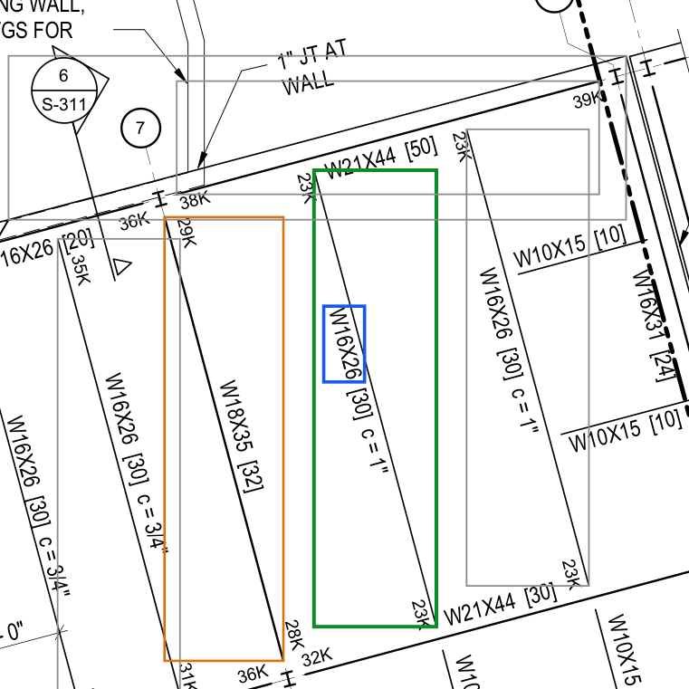
| ID | kind | derivation | len | dist | rank | score |
|---|---|---|---|---|---|---|
| rnd_raw_p8_1285_cba42058a285 | LINE_MEMBER_CANDIDATE | reclass_restore | 261.015 | 0.0 | 1 | 0.8414 |
| rnd_raw_p8_1294_4e2b694a2be6 | LINE_MEMBER_CANDIDATE | reclass_restore | 253.679 | 22.28 | 2 | 0.636 |
| rnd_raw_p8_1284_2ab7f6b159ec | LINE_MEMBER_CANDIDATE | reclass_restore | 261.015 | 56.34 | 3 | 0.4606 |
| rnd_raw_p8_1278_6ae14e02a201 | LINE_MEMBER_CANDIDATE | reclass_restore | 241.512 | 61.78 | 6 | 0.3574 |
| rnd_raw_p8_1025_f5020ae58794 | LINE_MEMBER_CANDIDATE | retained_member | 352.838 | 47.74 | 4 | 0.4051 |
| rnd_raw_p8_1326_cea5e757337b | LINE_MEMBER_CANDIDATE | reclass_restore | 261.015 | 79.4 | 5 | 0.3626 |
Classification: B (HIGH) · new_status: VALID_MEMBER_NOW_VISIBLE
Old gold: NO_VALID_MEMBER · G9: ASSOCIATED ·
selected: rnd_raw_p8_1286_88fce0a03302 ·
best: rnd_raw_p8_1286_88fce0a03302
Short W10X15 joist under the label was CAP-dropped; G8 cap_restore returns the ~75pt stroke G9 associates. Old gold had no short-joist candidate.
Short on-label joist between girders matches selected length/orientation.
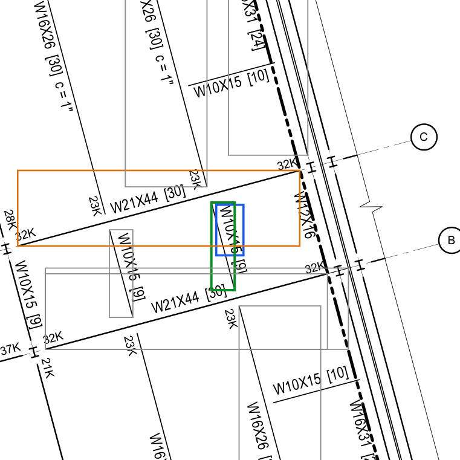
| ID | kind | derivation | len | dist | rank | score |
|---|---|---|---|---|---|---|
| rnd_raw_p8_1286_88fce0a03302 | LINE_MEMBER_CANDIDATE | cap_restore | 75.011 | 0.0 | 1 | 0.8675 |
| rnd_raw_p8_1274_e21a18219b27 | LINE_MEMBER_CANDIDATE | reclass_restore | 241.512 | 0.0 | 2 | 0.7593 |
| rnd_raw_p8_1284_2ab7f6b159ec | LINE_MEMBER_CANDIDATE | reclass_restore | 261.015 | 16.704 | 3 | 0.6657 |
| rnd_raw_p8_1277_737c2c6faef8 | LINE_MEMBER_CANDIDATE | reclass_restore | 259.531 | 10.5 | 5 | 0.6091 |
| rnd_raw_p8_1275_09a4936ab405 | LINE_MEMBER_CANDIDATE | reclass_restore | 241.512 | 15.18 | 6 | 0.5839 |
| rnd_raw_p8_1301_5bbc33a526a9 | LINE_MEMBER_CANDIDATE | reclass_restore | 260.899 | 41.82 | 8 | 0.5331 |
| rnd_raw_p8_1364_9d12024059aa | LINE_MEMBER_CANDIDATE | reclass_restore | 253.679 | 41.02 | 7 | 0.5491 |
| rnd_raw_p8_1287_18ba2761eddd | LINE_MEMBER_CANDIDATE | cap_restore | 75.042 | None | None | None |
| rnd_raw_p8_1273_e6adfa57dad5 | LINE_MEMBER_CANDIDATE | retained_member | 253.448 | None | None | None |
| rnd_raw_p8_1302_189e6c134034 | LINE_MEMBER_CANDIDATE | reclass_restore | 261.015 | None | None | None |
| rnd_raw_p8_1586_1cb43421f2b4 | LINE_MEMBER_CANDIDATE | retained_member | 330.816 | 18.979 | 4 | 0.6151 |
| rnd_raw_p8_1591_cd3da4484b79 | LINE_MEMBER_CANDIDATE | retained_member | 330.816 | None | None | None |
Classification: B (HIGH) · new_status: VALID_MEMBER_NOW_VISIBLE
Old gold: NO_VALID_MEMBER · G9: ASSOCIATED ·
selected: rnd_raw_p8_1287_18ba2761eddd ·
best: rnd_raw_p8_1287_18ba2761eddd
Mirror of p8_345: CAP-dropped short W10X15 under label recovered by G8 cap_restore; previously absent from association candidates.
Short joist under label; G9 selects recovered CAP stroke.
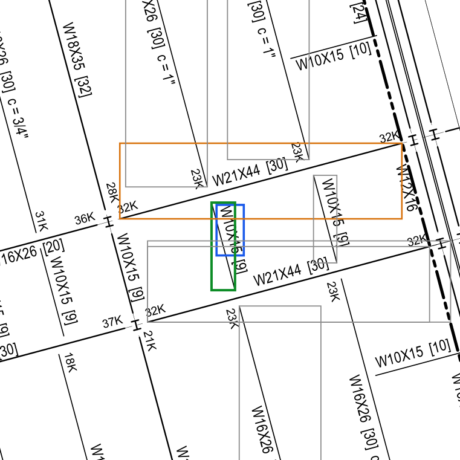
| ID | kind | derivation | len | dist | rank | score |
|---|---|---|---|---|---|---|
| rnd_raw_p8_1287_18ba2761eddd | LINE_MEMBER_CANDIDATE | cap_restore | 75.042 | 0.0 | 1 | 0.8671 |
| rnd_raw_p8_1274_e21a18219b27 | LINE_MEMBER_CANDIDATE | reclass_restore | 241.512 | 0.0 | 2 | 0.7086 |
| rnd_raw_p8_1285_cba42058a285 | LINE_MEMBER_CANDIDATE | reclass_restore | 261.015 | 16.704 | 5 | 0.6657 |
| rnd_raw_p8_1277_737c2c6faef8 | LINE_MEMBER_CANDIDATE | reclass_restore | 259.531 | 0.0 | 3 | 0.7045 |
| rnd_raw_p8_1275_09a4936ab405 | LINE_MEMBER_CANDIDATE | reclass_restore | 241.512 | 0.0 | 4 | 0.6992 |
| rnd_raw_p8_1302_189e6c134034 | LINE_MEMBER_CANDIDATE | reclass_restore | 261.015 | 41.82 | 7 | 0.5333 |
| rnd_raw_p8_1286_88fce0a03302 | LINE_MEMBER_CANDIDATE | cap_restore | 75.011 | 57.66 | 8 | 0.4583 |
| rnd_raw_p8_1284_2ab7f6b159ec | LINE_MEMBER_CANDIDATE | reclass_restore | 261.015 | 37.42 | 6 | 0.5717 |
| rnd_raw_p8_1298_8ce7643019b9 | LINE_MEMBER_CANDIDATE | reclass_restore | 253.679 | None | None | None |
Classification: B (MEDIUM) · new_status: VALID_MEMBER_NOW_VISIBLE
Old gold: NO_VALID_MEMBER · G9: ASSOCIATED ·
selected: rnd_raw_p8_1288_c0f7320ead19 ·
best: rnd_raw_p8_1288_c0f7320ead19
Label sits on W16X26 joist. Under-label raw was CAP-dropped leader stub; G8 neighborhood reclass recovers a member-scale joist stroke G9 selects. Crowded bay has other long strokes, but selected matches the labeled joist scale.
Joist under label now candidate; old overlays were S-311 callout / giant polyline.
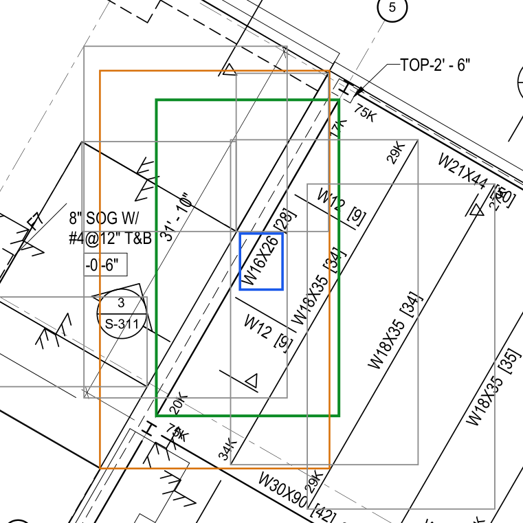
| ID | kind | derivation | len | dist | rank | score |
|---|---|---|---|---|---|---|
| rnd_raw_p8_1288_c0f7320ead19 | LINE_MEMBER_CANDIDATE | reclass_restore | 265.537 | 0.0 | 1 | 0.8176 |
| rnd_raw_p8_965_989494a03742 | LINE_MEMBER_CANDIDATE | retained_member | 334.182 | 0.0 | 2 | 0.7519 |
| rnd_raw_p8_1041_59c3c989d1ec | LINE_MEMBER_CANDIDATE | retained_member | 129.869 | 3.154 | 5 | 0.6451 |
| rnd_raw_p8_1042_51a6d00beb80 | LINE_MEMBER_CANDIDATE | retained_member | 133.264 | None | None | None |
| rnd_raw_p8_1340_15043854c468 | LINE_MEMBER_CANDIDATE | reclass_restore | 272.948 | 0.0 | 3 | 0.7368 |
| rnd_raw_p8_3401_51abad69318c | LINE_MEMBER_CANDIDATE | reclass_restore | 295.484 | 0.0 | 4 | 0.716 |
| rnd_raw_p8_1339_91f1ee05f373 | LINE_MEMBER_CANDIDATE | reclass_restore | 273.052 | 17.99 | 6 | 0.5836 |
| rnd_raw_p8_1113_25585e38b681 | LINE_MEMBER_CANDIDATE | retained_member | 130.535 | None | None | None |
| rnd_raw_p8_1507_4957e7e93064 | LINE_MEMBER_CANDIDATE | retained_member | 152.579 | None | None | None |
| rnd_raw_p8_1489_3a5ac1b6e340 | LINE_MEMBER_CANDIDATE | reclass_restore | 172.42 | None | None | None |
| rnd_raw_p8_1015_4ab88384100b | LINE_MEMBER_CANDIDATE | reclass_restore | 312.095 | 34.19 | 7 | 0.478 |
| rnd_raw_p8_1045_da4626de0c3b | LINE_MEMBER_CANDIDATE | retained_member | 321.234 | 37.91 | 8 | 0.4469 |
Classification: B (HIGH) · new_status: VALID_MEMBER_NOW_VISIBLE
Old gold: NO_VALID_MEMBER · G9: ASSOCIATED ·
selected: rnd_raw_p8_1292_be2a2c871ca2 ·
best: rnd_raw_p8_1292_be2a2c871ca2
Label sits on W16X26 girder; G8 recovers a ~109pt member-scale stroke under the label (neighborhood after CAP drop). Old candidates were callout/giant polyline.
On-label girder segment recovered; not S-311/S-401 callouts.
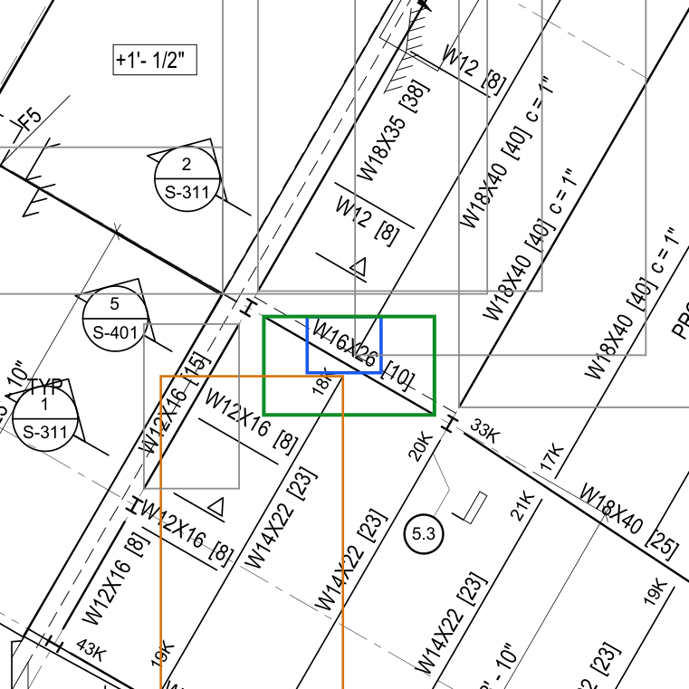
| ID | kind | derivation | len | dist | rank | score |
|---|---|---|---|---|---|---|
| rnd_raw_p8_1341_16dcbc2956c0 | LINE_MEMBER_CANDIDATE | retained_member | 321.07 | 0.0 | 5 | 0.608 |
| rnd_raw_p8_1292_be2a2c871ca2 | LINE_MEMBER_CANDIDATE | reclass_restore | 108.76 | 0.0 | 1 | 0.814 |
| rnd_raw_p8_1380_42b17cb95e13 | LINE_MEMBER_CANDIDATE | reclass_restore | 200.968 | 1.91 | 2 | 0.6708 |
| rnd_raw_p8_1291_5699e04ee9db | LINE_MEMBER_CANDIDATE | retained_member | 313.494 | 14.18 | 4 | 0.6315 |
| rnd_raw_p8_1290_407372b1406b | LINE_MEMBER_CANDIDATE | reclass_restore | 104.95 | 37.61 | 7 | 0.4602 |
| rnd_raw_p8_1117_b3706852deb8 | LINE_MEMBER_CANDIDATE | retained_member | 291.986 | 12.62 | 3 | 0.6697 |
| rnd_raw_p8_1299_176f6a1bb69e | LINE_MEMBER_CANDIDATE | retained_member | 317.364 | None | None | None |
| rnd_raw_p8_1116_24707f9663c8 | LINE_MEMBER_CANDIDATE | retained_member | 161.986 | 48.288 | 8 | 0.4428 |
| rnd_raw_p8_1035_2e255f8ece12 | LINE_MEMBER_CANDIDATE | retained_member | 218.285 | None | None | None |
| rnd_raw_p8_1036_e0c99fc8d832 | LINE_MEMBER_CANDIDATE | retained_member | 162.943 | None | None | None |
| rnd_raw_p8_966_226739ea4742 | LINE_MEMBER_CANDIDATE | retained_member | 218.814 | None | None | None |
| rnd_raw_p8_1381_eab3132b93da | LINE_MEMBER_CANDIDATE | reclass_restore | 197.366 | 37.19 | 6 | 0.5232 |
Classification: B (HIGH) · new_status: VALID_MEMBER_NOW_VISIBLE
Old gold: NO_VALID_MEMBER · G9: ASSOCIATED ·
selected: rnd_raw_p8_1294_4e2b694a2be6 ·
best: rnd_raw_p8_1294_4e2b694a2be6
Label sits on W18X35 joist; G8 reclass_restore recovers that joist after leader misclass. Old overlays were distant infill / wall.
Selected joist path aligns with on-label W18X35.
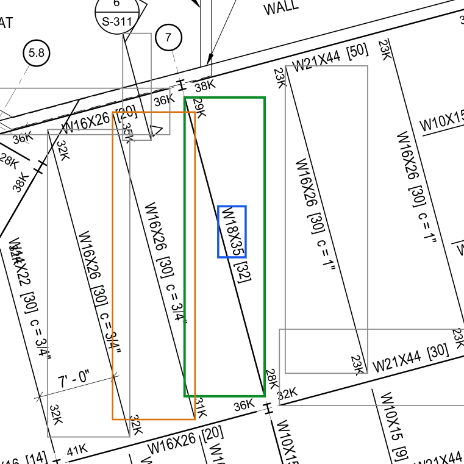
| ID | kind | derivation | len | dist | rank | score |
|---|---|---|---|---|---|---|
| rnd_raw_p8_1294_4e2b694a2be6 | LINE_MEMBER_CANDIDATE | reclass_restore | 253.679 | 0.0 | 1 | 0.8665 |
| rnd_raw_p8_1326_cea5e757337b | LINE_MEMBER_CANDIDATE | reclass_restore | 261.015 | 19.03 | 2 | 0.6549 |
| rnd_raw_p8_1285_cba42058a285 | LINE_MEMBER_CANDIDATE | reclass_restore | 261.015 | 32.46 | 3 | 0.5676 |
| rnd_raw_p8_3357_bafd8b8dc00a | LINE_MEMBER_CANDIDATE | retained_member | 90.787 | 77.084 | 5 | 0.3606 |
| rnd_raw_p8_1484_19ed80f9fdf5 | LINE_MEMBER_CANDIDATE | reclass_restore | 261.015 | 72.43 | 4 | 0.3922 |
| rnd_raw_p8_1486_5bfecaab0704 | LINE_MEMBER_CANDIDATE | reclass_restore | 146.852 | 70.914 | 7 | 0.3186 |
| rnd_raw_p8_1274_e21a18219b27 | LINE_MEMBER_CANDIDATE | reclass_restore | 241.512 | 65.144 | 6 | 0.3431 |
Classification: B (HIGH) · new_status: VALID_MEMBER_NOW_VISIBLE
Old gold: NO_VALID_MEMBER · G9: ASSOCIATED ·
selected: rnd_raw_p8_1296_4f4b33f9373b ·
best: rnd_raw_p8_1296_4f4b33f9373b
Label sits on W16X26 girder; G8 reclass recovers the girder previously classified as dimension. Old overlays were W14/W12 infills.
Girder under label recovered via reclass_restore.
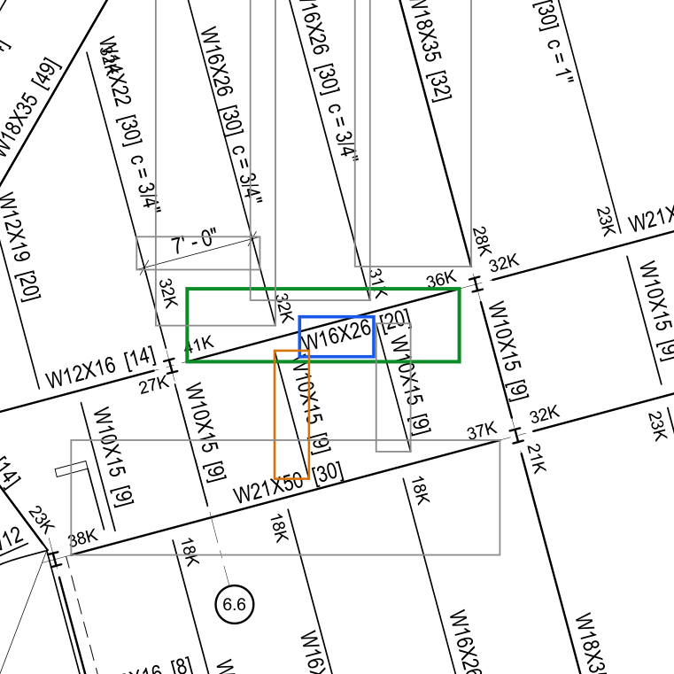
| ID | kind | derivation | len | dist | rank | score |
|---|---|---|---|---|---|---|
| rnd_raw_p8_1296_4f4b33f9373b | LINE_MEMBER_CANDIDATE | reclass_restore | 159.019 | 0.0 | 1 | 0.8654 |
| rnd_raw_p8_1327_7e831bb3d961 | LINE_MEMBER_CANDIDATE | cap_restore | 74.926 | 1.39 | 3 | 0.722 |
| rnd_raw_p8_1326_cea5e757337b | LINE_MEMBER_CANDIDATE | reclass_restore | 261.015 | 9.31 | 4 | 0.7032 |
| rnd_raw_p8_1484_19ed80f9fdf5 | LINE_MEMBER_CANDIDATE | reclass_restore | 261.015 | 13.66 | 6 | 0.5875 |
| rnd_raw_p8_1328_27999919be3c | LINE_MEMBER_CANDIDATE | cap_restore | 74.926 | 0.0 | 2 | 0.7403 |
| rnd_raw_p8_3330_b79e1eb5ab00 | LINE_MEMBER_CANDIDATE | cap_restore | 72.042 | 34.781 | 5 | 0.5882 |
| rnd_raw_p8_1260_a31b1adb0cdb | LINE_MEMBER_CANDIDATE | reclass_restore | 250.564 | 47.12 | 8 | 0.4998 |
| rnd_raw_p8_1294_4e2b694a2be6 | LINE_MEMBER_CANDIDATE | reclass_restore | 253.679 | 28.39 | 7 | 0.5475 |
| rnd_raw_p8_1329_33db0f29cdc8 | LINE_MEMBER_CANDIDATE | reclass_restore | 261.015 | None | None | None |
| rnd_raw_p8_1274_e21a18219b27 | LINE_MEMBER_CANDIDATE | reclass_restore | 241.512 | None | None | None |
| rnd_raw_p8_1485_156e44d25c24 | LINE_MEMBER_CANDIDATE | retained_member | 173.049 | None | None | None |
| rnd_raw_p8_1012_98df7602bd9e | LINE_MEMBER_CANDIDATE | reclass_restore | 338.812 | None | None | None |
Classification: B (HIGH) · new_status: VALID_MEMBER_NOW_VISIBLE
Old gold: NO_VALID_MEMBER · G9: ASSOCIATED ·
selected: rnd_raw_p8_1301_5bbc33a526a9 ·
best: rnd_raw_p8_1301_5bbc33a526a9
Label sits on W16X26 joist; G8 recovers on-label joist (was dimension). Old green/orange were EJ wall / tall wall box.
On-label joist, not the EJ wall member.
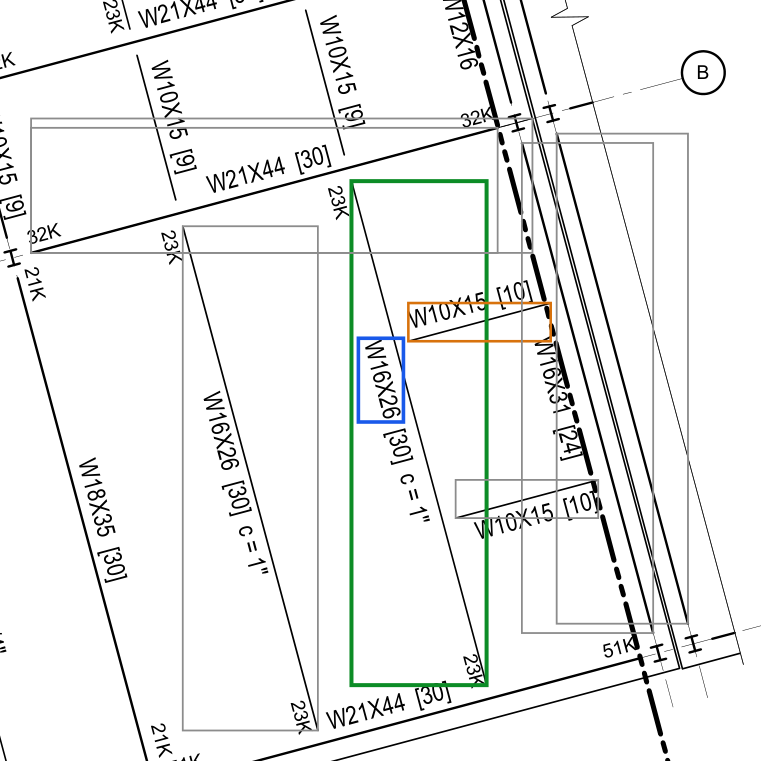
| ID | kind | derivation | len | dist | rank | score |
|---|---|---|---|---|---|---|
| rnd_raw_p8_1301_5bbc33a526a9 | LINE_MEMBER_CANDIDATE | reclass_restore | 260.899 | 0.0 | 1 | 0.8371 |
| rnd_raw_p8_1399_a867be18d612 | LINE_MEMBER_CANDIDATE | cap_restore | 73.673 | 2.46 | 2 | 0.7174 |
| rnd_raw_p8_1302_189e6c134034 | LINE_MEMBER_CANDIDATE | reclass_restore | 261.015 | 20.24 | 3 | 0.6471 |
| rnd_raw_p8_1400_a64113f84b70 | LINE_MEMBER_CANDIDATE | cap_restore | 73.79 | 39.001 | 4 | 0.4763 |
| rnd_raw_p8_1360_7199b5f5d5e5 | LINE_MEMBER_CANDIDATE | reclass_restore | 253.679 | 59.22 | 5 | 0.4483 |
| rnd_raw_p8_1275_09a4936ab405 | LINE_MEMBER_CANDIDATE | reclass_restore | 241.512 | 42.7 | 6 | 0.4385 |
| rnd_raw_p8_1277_737c2c6faef8 | LINE_MEMBER_CANDIDATE | reclass_restore | 259.531 | 42.7 | 7 | 0.4385 |
| rnd_raw_p8_1300_5f9e3f871947 | LINE_MEMBER_CANDIDATE | retained_member | 253.679 | 76.62 | 8 | 0.3624 |
Classification: B (HIGH) · new_status: VALID_MEMBER_NOW_VISIBLE
Old gold: NO_VALID_MEMBER · G9: ASSOCIATED ·
selected: rnd_raw_p8_1302_189e6c134034 ·
best: rnd_raw_p8_1302_189e6c134034
Label sits on W16X26 joist; only old candidate was a giant bay polyline. G8 reclass_restore exposes the joist stroke G9 selects.
Joist under label now present; giant bay no longer the only option.
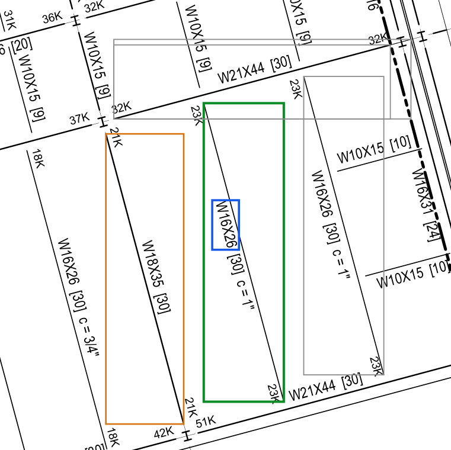
| ID | kind | derivation | len | dist | rank | score |
|---|---|---|---|---|---|---|
| rnd_raw_p8_1302_189e6c134034 | LINE_MEMBER_CANDIDATE | reclass_restore | 261.015 | 0.0 | 1 | 0.8455 |
| rnd_raw_p8_1298_8ce7643019b9 | LINE_MEMBER_CANDIDATE | reclass_restore | 253.679 | 24.08 | 2 | 0.6243 |
| rnd_raw_p8_1301_5bbc33a526a9 | LINE_MEMBER_CANDIDATE | reclass_restore | 260.899 | 54.66 | 3 | 0.4677 |
| rnd_raw_p8_1275_09a4936ab405 | LINE_MEMBER_CANDIDATE | reclass_restore | 241.512 | 68.62 | 4 | 0.3284 |
| rnd_raw_p8_1277_737c2c6faef8 | LINE_MEMBER_CANDIDATE | reclass_restore | 259.531 | 68.62 | 5 | 0.3284 |
Classification: B (HIGH) · new_status: VALID_MEMBER_NOW_VISIBLE
Old gold: NO_VALID_MEMBER · G9: ASSOCIATED ·
selected: rnd_raw_p8_1326_cea5e757337b ·
best: rnd_raw_p8_1326_cea5e757337b
Label sits on W16X26 joist; G8 recovers it from dimension class. Old overlay was the W21X44 wall beam.
Selected equals on-label joist, not wall beam.
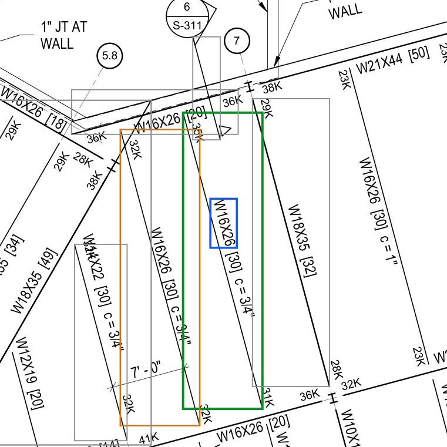
| ID | kind | derivation | len | dist | rank | score |
|---|---|---|---|---|---|---|
| rnd_raw_p8_1326_cea5e757337b | LINE_MEMBER_CANDIDATE | reclass_restore | 261.015 | 0.0 | 1 | 0.8784 |
| rnd_raw_p8_1294_4e2b694a2be6 | LINE_MEMBER_CANDIDATE | reclass_restore | 253.679 | 13.27 | 3 | 0.6946 |
| rnd_raw_p8_1484_19ed80f9fdf5 | LINE_MEMBER_CANDIDATE | reclass_restore | 261.015 | 9.08 | 2 | 0.7196 |
| rnd_raw_p8_3357_bafd8b8dc00a | LINE_MEMBER_CANDIDATE | retained_member | 90.787 | 50.14 | 4 | 0.492 |
| rnd_raw_p8_1012_98df7602bd9e | LINE_MEMBER_CANDIDATE | reclass_restore | 338.812 | 50.36 | 5 | 0.4459 |
| rnd_raw_p8_1026_fa500cc74c9c | LINE_MEMBER_CANDIDATE | reclass_restore | 338.812 | 50.36 | 6 | 0.4459 |
| rnd_raw_p8_1486_5bfecaab0704 | LINE_MEMBER_CANDIDATE | reclass_restore | 146.852 | 54.82 | 7 | 0.387 |
| rnd_raw_p8_1485_156e44d25c24 | LINE_MEMBER_CANDIDATE | retained_member | 173.049 | 70.88 | 8 | 0.3868 |
Classification: B (HIGH) · new_status: VALID_MEMBER_NOW_VISIBLE
Old gold: NO_VALID_MEMBER · G9: ASSOCIATED ·
selected: rnd_raw_p8_1327_7e831bb3d961 ·
best: rnd_raw_p8_1327_7e831bb3d961
Short W10X15 under label was CAP-dropped; G8 cap_restore recovers ~75pt stroke. Old overlay was W14X22 infill.
Short on-label joist matches CAP restore.
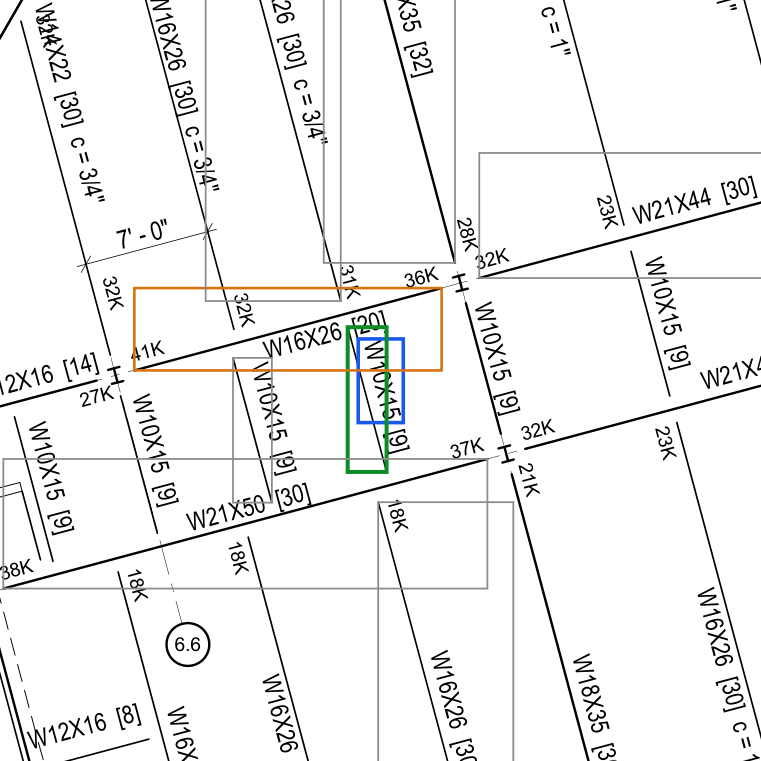
| ID | kind | derivation | len | dist | rank | score |
|---|---|---|---|---|---|---|
| rnd_raw_p8_1327_7e831bb3d961 | LINE_MEMBER_CANDIDATE | cap_restore | 74.926 | 0.0 | 1 | 0.8646 |
| rnd_raw_p8_1296_4f4b33f9373b | LINE_MEMBER_CANDIDATE | reclass_restore | 159.019 | 0.0 | 2 | 0.7421 |
| rnd_raw_p8_1326_cea5e757337b | LINE_MEMBER_CANDIDATE | reclass_restore | 261.015 | 20.851 | 3 | 0.6408 |
| rnd_raw_p8_1260_a31b1adb0cdb | LINE_MEMBER_CANDIDATE | reclass_restore | 250.564 | 18.19 | 5 | 0.5618 |
| rnd_raw_p8_1329_33db0f29cdc8 | LINE_MEMBER_CANDIDATE | reclass_restore | 261.015 | 39.79 | 6 | 0.5559 |
| rnd_raw_p8_1328_27999919be3c | LINE_MEMBER_CANDIDATE | cap_restore | 74.926 | 43.16 | 7 | 0.5521 |
| rnd_raw_p8_1294_4e2b694a2be6 | LINE_MEMBER_CANDIDATE | reclass_restore | 253.679 | 38.02 | 4 | 0.5855 |
| rnd_raw_p8_1274_e21a18219b27 | LINE_MEMBER_CANDIDATE | reclass_restore | 241.512 | None | None | None |
| rnd_raw_p8_1484_19ed80f9fdf5 | LINE_MEMBER_CANDIDATE | reclass_restore | 261.015 | None | None | None |
| rnd_raw_p8_1275_09a4936ab405 | LINE_MEMBER_CANDIDATE | reclass_restore | 241.512 | None | None | None |
| rnd_raw_p8_1277_737c2c6faef8 | LINE_MEMBER_CANDIDATE | reclass_restore | 259.531 | None | None | None |
| rnd_raw_p8_1298_8ce7643019b9 | LINE_MEMBER_CANDIDATE | reclass_restore | 253.679 | 59.997 | 8 | 0.445 |
Classification: B (HIGH) · new_status: VALID_MEMBER_NOW_VISIBLE
Old gold: NO_VALID_MEMBER · G9: ASSOCIATED ·
selected: rnd_raw_p8_1328_27999919be3c ·
best: rnd_raw_p8_1328_27999919be3c
Short W10X15 CAP-dropped; G8 recovers joist. Old green/orange were W14X22 infill and stair, not the joist.
Recovered short joist under label.
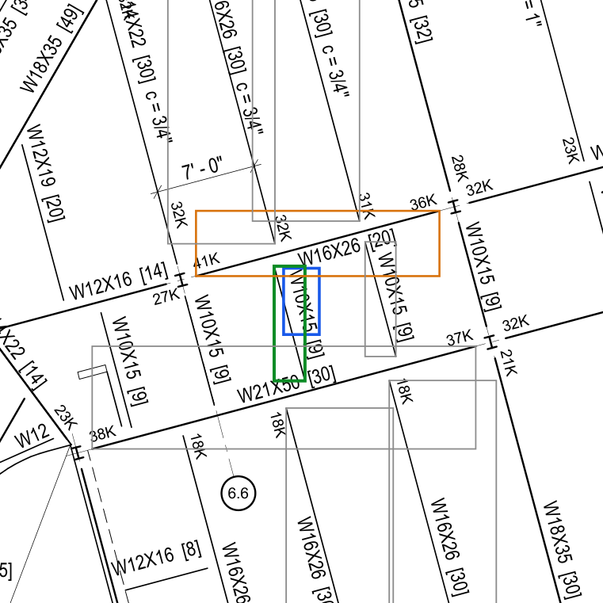
| ID | kind | derivation | len | dist | rank | score |
|---|---|---|---|---|---|---|
| rnd_raw_p8_1328_27999919be3c | LINE_MEMBER_CANDIDATE | cap_restore | 74.926 | 0.0 | 1 | 0.863 |
| rnd_raw_p8_1296_4f4b33f9373b | LINE_MEMBER_CANDIDATE | reclass_restore | 159.019 | 0.0 | 2 | 0.7178 |
| rnd_raw_p8_1484_19ed80f9fdf5 | LINE_MEMBER_CANDIDATE | reclass_restore | 261.015 | 16.402 | 3 | 0.6702 |
| rnd_raw_p8_1327_7e831bb3d961 | LINE_MEMBER_CANDIDATE | cap_restore | 74.926 | 28.87 | 4 | 0.645 |
| rnd_raw_p8_1260_a31b1adb0cdb | LINE_MEMBER_CANDIDATE | reclass_restore | 250.564 | 7.39 | 6 | 0.632 |
| rnd_raw_p8_1326_cea5e757337b | LINE_MEMBER_CANDIDATE | reclass_restore | 261.015 | 29.74 | 5 | 0.6394 |
| rnd_raw_p8_1330_8069b8cef64a | LINE_MEMBER_CANDIDATE | reclass_restore | 261.015 | 46.39 | 7 | 0.522 |
| rnd_raw_p8_1329_33db0f29cdc8 | LINE_MEMBER_CANDIDATE | reclass_restore | 261.015 | 52.784 | 8 | 0.4757 |
| rnd_raw_p8_1485_156e44d25c24 | LINE_MEMBER_CANDIDATE | retained_member | 173.049 | None | None | None |
| rnd_raw_p8_1366_d84aae2fd2ee | LINE_MEMBER_CANDIDATE | retained_member | 110.058 | None | None | None |
| rnd_raw_p8_3330_b79e1eb5ab00 | LINE_MEMBER_CANDIDATE | cap_restore | 72.042 | None | None | None |
| rnd_raw_p8_1331_30f351be6ccf | LINE_MEMBER_CANDIDATE | reclass_restore | 261.015 | None | None | None |
Classification: C (MEDIUM) · new_status: MULTIPLE_VALID_CANDIDATES
Old gold: NO_VALID_MEMBER · G9: ASSOCIATED ·
selected: rnd_raw_p8_1338_4cd2ddf31320 ·
best: None
G8 recovers multiple parallel W18-scale joist strokes that all touch the label neighborhood (same-scale competitors at ~0 distance). PDF shows a dense parallel bay; ownership of a single stroke is not deterministic from geometry alone even though a member is visible.
Parallel W18 joists; several reclass_restore candidates equally memberlike.
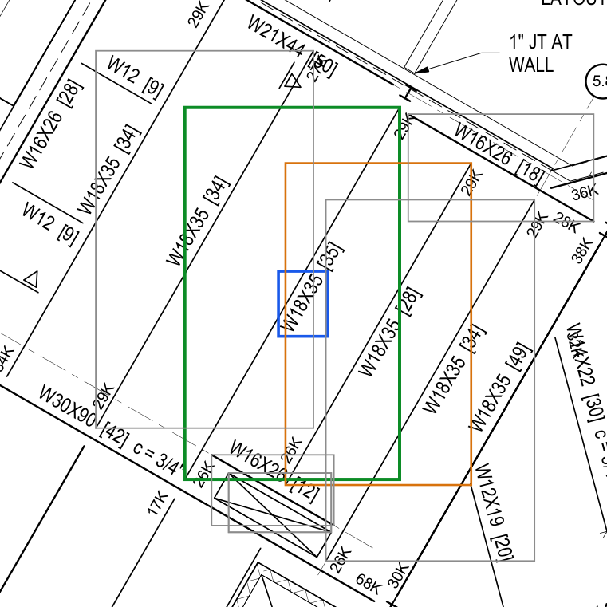
| ID | kind | derivation | len | dist | rank | score |
|---|---|---|---|---|---|---|
| rnd_raw_p8_1338_4cd2ddf31320 | LINE_MEMBER_CANDIDATE | reclass_restore | 269.243 | 0.0 | 1 | 0.8246 |
| rnd_raw_p8_1496_77117ad76f03 | LINE_MEMBER_CANDIDATE | reclass_restore | 232.895 | 0.0 | 2 | 0.734 |
| rnd_raw_p8_1339_91f1ee05f373 | LINE_MEMBER_CANDIDATE | reclass_restore | 273.052 | 0.0 | 3 | 0.7011 |
| rnd_raw_p8_1494_7c1a1e740815 | LINE_MEMBER_CANDIDATE | reclass_restore | 261.503 | 0.0 | 4 | 0.6607 |
| rnd_raw_p8_1495_2d42c14022d1 | LINE_MEMBER_CANDIDATE | cap_restore | 88.547 | None | None | None |
| rnd_raw_p8_1020_c6050030c5f1 | LINE_MEMBER_CANDIDATE | cap_restore | 74.243 | None | None | None |
| rnd_raw_p8_1635_3073e659fbc9 | LINE_MEMBER_CANDIDATE | cap_restore | 74.243 | None | None | None |
| rnd_raw_p8_1493_d210661441dd | LINE_MEMBER_CANDIDATE | reclass_restore | 134.301 | None | None | None |
| rnd_raw_p8_1340_15043854c468 | LINE_MEMBER_CANDIDATE | reclass_restore | 272.948 | 33.86 | 6 | 0.5161 |
| rnd_raw_p8_1289_4e7d1746dcb0 | LINE_MEMBER_CANDIDATE | reclass_restore | 323.972 | 4.13 | 5 | 0.6024 |
| rnd_raw_p8_1293_5e2f730bed81 | LINE_MEMBER_CANDIDATE | reclass_restore | 253.435 | 43.55 | 8 | 0.4749 |
| rnd_raw_p8_1012_98df7602bd9e | LINE_MEMBER_CANDIDATE | reclass_restore | 338.812 | 38.27 | 7 | 0.4973 |
Classification: C (MEDIUM) · new_status: MULTIPLE_VALID_CANDIDATES
Old gold: NO_VALID_MEMBER · G9: ASSOCIATED ·
selected: rnd_raw_p8_1339_91f1ee05f373 ·
best: None
Parallel W18X35 bay: top-3 G8 candidates are same-scale joist strokes with near-zero label distance and thin G9 margin (~0.08). Deterministic ownership not established.
Repeated parallel joists; selected not uniquely owned by visual topology alone.
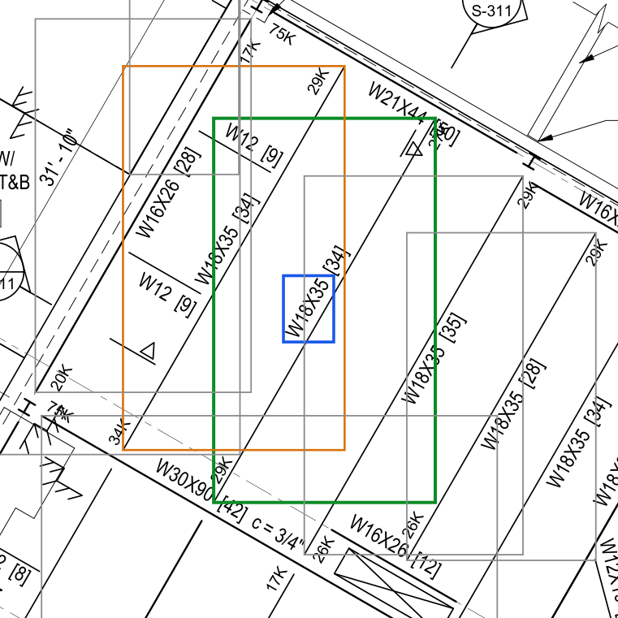
| ID | kind | derivation | len | dist | rank | score |
|---|---|---|---|---|---|---|
| rnd_raw_p8_1339_91f1ee05f373 | LINE_MEMBER_CANDIDATE | reclass_restore | 273.052 | 0.0 | 1 | 0.8181 |
| rnd_raw_p8_1340_15043854c468 | LINE_MEMBER_CANDIDATE | reclass_restore | 272.948 | 0.0 | 2 | 0.7364 |
| rnd_raw_p8_1338_4cd2ddf31320 | LINE_MEMBER_CANDIDATE | reclass_restore | 269.243 | 0.0 | 3 | 0.6945 |
| rnd_raw_p8_1288_c0f7320ead19 | LINE_MEMBER_CANDIDATE | reclass_restore | 265.537 | 19.94 | 4 | 0.5752 |
| rnd_raw_p8_1496_77117ad76f03 | LINE_MEMBER_CANDIDATE | reclass_restore | 232.895 | 44.99 | 8 | 0.4688 |
| rnd_raw_p8_965_989494a03742 | LINE_MEMBER_CANDIDATE | retained_member | 334.182 | 26.78 | 5 | 0.5342 |
| rnd_raw_p8_1042_51a6d00beb80 | LINE_MEMBER_CANDIDATE | retained_member | 133.264 | None | None | None |
| rnd_raw_p8_1289_4e7d1746dcb0 | LINE_MEMBER_CANDIDATE | reclass_restore | 323.972 | None | None | None |
| rnd_raw_p8_1489_3a5ac1b6e340 | LINE_MEMBER_CANDIDATE | reclass_restore | 172.42 | None | None | None |
| rnd_raw_p8_1015_4ab88384100b | LINE_MEMBER_CANDIDATE | reclass_restore | 312.095 | 23.22 | 6 | 0.5213 |
| rnd_raw_p8_1045_da4626de0c3b | LINE_MEMBER_CANDIDATE | retained_member | 321.234 | 25.14 | 7 | 0.5012 |
| rnd_raw_p8_3401_51abad69318c | LINE_MEMBER_CANDIDATE | reclass_restore | 295.484 | None | None | None |
Classification: C (MEDIUM) · new_status: MULTIPLE_VALID_CANDIDATES
Old gold: NO_VALID_MEMBER · G9: ASSOCIATED ·
selected: rnd_raw_p8_1340_15043854c468 ·
best: None
Same parallel-bay pattern as neighboring W18 labels: multiple recovered member-scale strokes compete at the label. Ambiguous under G8 universe.
Crowded parallel W18s; no unique owner proven.
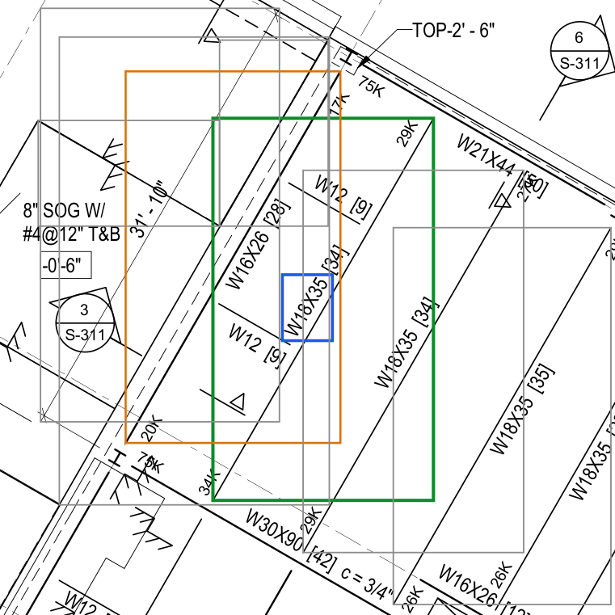
| ID | kind | derivation | len | dist | rank | score |
|---|---|---|---|---|---|---|
| rnd_raw_p8_1340_15043854c468 | LINE_MEMBER_CANDIDATE | reclass_restore | 272.948 | 0.0 | 1 | 0.8181 |
| rnd_raw_p8_1288_c0f7320ead19 | LINE_MEMBER_CANDIDATE | reclass_restore | 265.537 | 0.0 | 2 | 0.7364 |
| rnd_raw_p8_965_989494a03742 | LINE_MEMBER_CANDIDATE | retained_member | 334.182 | 0.0 | 4 | 0.6706 |
| rnd_raw_p8_1339_91f1ee05f373 | LINE_MEMBER_CANDIDATE | reclass_restore | 273.052 | 0.0 | 3 | 0.6925 |
| rnd_raw_p8_1041_59c3c989d1ec | LINE_MEMBER_CANDIDATE | retained_member | 129.869 | None | None | None |
| rnd_raw_p8_1042_51a6d00beb80 | LINE_MEMBER_CANDIDATE | retained_member | 133.264 | None | None | None |
| rnd_raw_p8_3401_51abad69318c | LINE_MEMBER_CANDIDATE | reclass_restore | 295.484 | 1.82 | 5 | 0.6522 |
| rnd_raw_p8_1338_4cd2ddf31320 | LINE_MEMBER_CANDIDATE | reclass_restore | 269.243 | 37.67 | 8 | 0.4999 |
| rnd_raw_p8_1289_4e7d1746dcb0 | LINE_MEMBER_CANDIDATE | reclass_restore | 323.972 | None | None | None |
| rnd_raw_p8_1489_3a5ac1b6e340 | LINE_MEMBER_CANDIDATE | reclass_restore | 172.42 | None | None | None |
| rnd_raw_p8_1015_4ab88384100b | LINE_MEMBER_CANDIDATE | reclass_restore | 312.095 | 0.0 | 6 | 0.62 |
| rnd_raw_p8_1045_da4626de0c3b | LINE_MEMBER_CANDIDATE | retained_member | 321.234 | 1.79 | 7 | 0.6004 |
Classification: C (MEDIUM) · new_status: MULTIPLE_VALID_CANDIDATES
Old gold: NO_VALID_MEMBER · G9: ASSOCIATED ·
selected: rnd_raw_p8_1341_16dcbc2956c0 ·
best: None
W18X40 among parallel W18X40s. Selected stroke was already a retained member line, but several similar-length retained/recovered strokes also touch the label. Gold overlays showed SOG/wall; under G8 the bay remains multi-candidate ambiguous.
Parallel identical W18X40s; contact alone does not pick one deterministically.
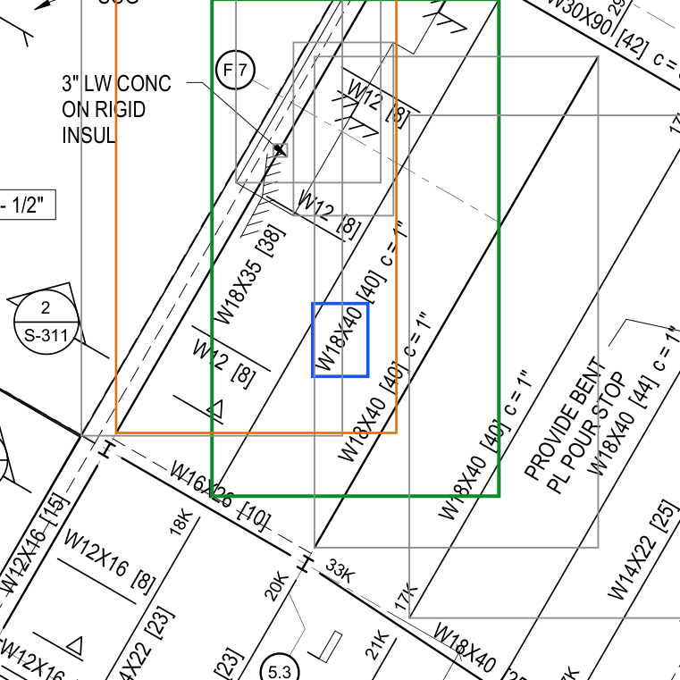
| ID | kind | derivation | len | dist | rank | score |
|---|---|---|---|---|---|---|
| rnd_raw_p8_1341_16dcbc2956c0 | LINE_MEMBER_CANDIDATE | on_label_retained | 321.07 | 0.0 | 1 | 0.8208 |
| rnd_raw_p8_1299_176f6a1bb69e | LINE_MEMBER_CANDIDATE | retained_member | 317.364 | 0.0 | 3 | 0.6818 |
| rnd_raw_p8_1537_5723f57887f3 | LINE_MEMBER_CANDIDATE | reclass_restore | 111.93 | 49.14 | 6 | 0.4747 |
| rnd_raw_p8_1291_5699e04ee9db | LINE_MEMBER_CANDIDATE | retained_member | 313.494 | 0.0 | 2 | 0.7222 |
| rnd_raw_p8_1117_b3706852deb8 | LINE_MEMBER_CANDIDATE | retained_member | 291.986 | 0.0 | 4 | 0.6663 |
| rnd_raw_p8_1541_36bf28e9a208 | LINE_MEMBER_CANDIDATE | retained_member | 162.09 | None | None | None |
| rnd_raw_p8_3149_c88535e28d73 | LINE_MEMBER_CANDIDATE | cap_restore | 21.534 | None | None | None |
| rnd_raw_p8_1342_2ac3070d18fc | LINE_MEMBER_CANDIDATE | retained_member | 324.836 | 23.15 | 5 | 0.5496 |
| rnd_raw_p8_1292_be2a2c871ca2 | LINE_MEMBER_CANDIDATE | reclass_restore | 108.76 | 47.33 | 7 | 0.4188 |
| rnd_raw_p8_1346_4fed0e35ae26 | LINE_MEMBER_CANDIDATE | reclass_restore | 328.542 | None | None | None |
| rnd_raw_p8_1289_4e7d1746dcb0 | LINE_MEMBER_CANDIDATE | reclass_restore | 323.972 | 50.827 | 8 | 0.404 |
Classification: B (HIGH) · new_status: VALID_MEMBER_NOW_VISIBLE
Old gold: NO_VALID_MEMBER · G9: ASSOCIATED ·
selected: rnd_raw_p8_1367_4908eae79b6f ·
best: rnd_raw_p8_1367_4908eae79b6f
Short W10X15 CAP-dropped under label; G8 cap_restore recovers it. Old overlays were W14X22 infill / stair.
Short on-label joist recovered.
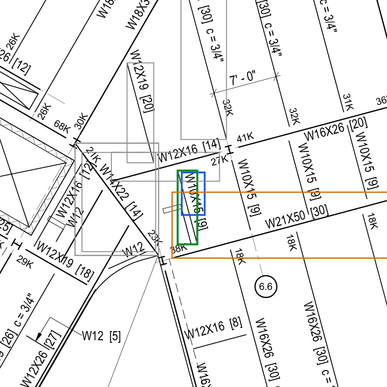
| ID | kind | derivation | len | dist | rank | score |
|---|---|---|---|---|---|---|
| rnd_raw_p8_1367_4908eae79b6f | LINE_MEMBER_CANDIDATE | cap_restore | 75.011 | 0.0 | 1 | 0.8675 |
| rnd_raw_p8_1366_d84aae2fd2ee | LINE_MEMBER_CANDIDATE | retained_member | 110.058 | 0.0 | 3 | 0.7284 |
| rnd_raw_p8_1365_2df9769d7b24 | LINE_MEMBER_CANDIDATE | retained_member | 101.733 | 29.138 | 4 | 0.6088 |
| rnd_raw_p8_1260_a31b1adb0cdb | LINE_MEMBER_CANDIDATE | reclass_restore | 250.564 | 0.0 | 2 | 0.7304 |
| rnd_raw_p8_1485_156e44d25c24 | LINE_MEMBER_CANDIDATE | retained_member | 173.049 | 32.38 | 5 | 0.6083 |
| rnd_raw_p8_1011_b6704cf3dbba | LINE_MEMBER_CANDIDATE | reclass_restore | 137.641 | 22.76 | 7 | 0.5565 |
| rnd_raw_p8_1027_0f9526241704 | LINE_MEMBER_CANDIDATE | reclass_restore | 137.641 | 22.76 | 8 | 0.5565 |
| rnd_raw_p8_1324_ab8a0c1fb67e | LINE_MEMBER_CANDIDATE | reclass_restore | 121.537 | None | None | None |
| rnd_raw_p8_1296_4f4b33f9373b | LINE_MEMBER_CANDIDATE | reclass_restore | 159.019 | None | None | None |
| rnd_raw_p8_1331_30f351be6ccf | LINE_MEMBER_CANDIDATE | reclass_restore | 261.015 | None | None | None |
| rnd_raw_p8_1029_af4000b1c875 | LINE_MEMBER_CANDIDATE | reclass_restore | 290.558 | 39.91 | 6 | 0.5734 |
| rnd_raw_p8_1505_9bd55e0652e4 | LINE_MEMBER_CANDIDATE | retained_member | 338.359 | None | None | None |
Classification: B (HIGH) · new_status: VALID_MEMBER_NOW_VISIBLE
Old gold: NO_VALID_MEMBER · G9: ASSOCIATED ·
selected: rnd_raw_p8_1397_51483cb885bd ·
best: rnd_raw_p8_1397_51483cb885bd
W10X15 at wall CAP-dropped; G8 recovers short stroke. Old overlays were W16X31 / W21X44 wall members.
Short wall-adjacent joist under label.
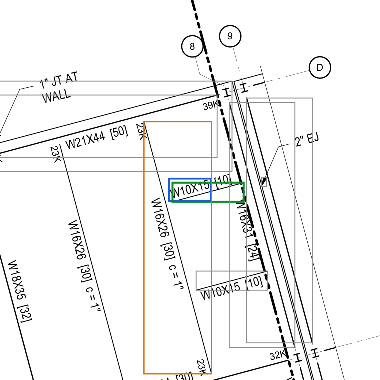
| ID | kind | derivation | len | dist | rank | score |
|---|---|---|---|---|---|---|
| rnd_raw_p8_1397_51483cb885bd | LINE_MEMBER_CANDIDATE | cap_restore | 73.673 | 0.0 | 1 | 0.8748 |
| rnd_raw_p8_1284_2ab7f6b159ec | LINE_MEMBER_CANDIDATE | reclass_restore | 261.015 | 0.0 | 2 | 0.7723 |
| rnd_raw_p8_1364_9d12024059aa | LINE_MEMBER_CANDIDATE | reclass_restore | 253.679 | 18.31 | 5 | 0.5601 |
| rnd_raw_p8_3282_489ed0431e45 | LINE_MEMBER_CANDIDATE | cap_restore | 21.393 | 50.47 | 6 | 0.539 |
| rnd_raw_p8_1273_e6adfa57dad5 | LINE_MEMBER_CANDIDATE | retained_member | 253.448 | 35.71 | 7 | 0.4562 |
| rnd_raw_p8_1278_6ae14e02a201 | LINE_MEMBER_CANDIDATE | reclass_restore | 241.512 | 21.07 | 4 | 0.6474 |
| rnd_raw_p8_1025_f5020ae58794 | LINE_MEMBER_CANDIDATE | retained_member | 352.838 | 7.03 | 3 | 0.6955 |
| rnd_raw_p8_1398_5786610a6f08 | LINE_MEMBER_CANDIDATE | cap_restore | 73.79 | None | None | None |
| rnd_raw_p8_1586_1cb43421f2b4 | LINE_MEMBER_CANDIDATE | retained_member | 330.816 | None | None | None |
| rnd_raw_p8_1591_cd3da4484b79 | LINE_MEMBER_CANDIDATE | retained_member | 330.816 | None | None | None |
| rnd_raw_p8_1285_cba42058a285 | LINE_MEMBER_CANDIDATE | reclass_restore | 261.015 | 41.86 | 8 | 0.4421 |
Classification: B (HIGH) · new_status: VALID_MEMBER_NOW_VISIBLE
Old gold: NO_VALID_MEMBER · G9: ASSOCIATED ·
selected: rnd_raw_p8_1398_5786610a6f08 ·
best: rnd_raw_p8_1398_5786610a6f08
W10X15 CAP-dropped; G8 recovers short joist. Old overlay was W16X31 at EJ.
Recovered short joist distinct from EJ W16X31.
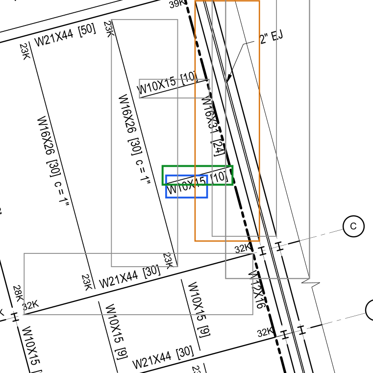
| ID | kind | derivation | len | dist | rank | score |
|---|---|---|---|---|---|---|
| rnd_raw_p8_1398_5786610a6f08 | LINE_MEMBER_CANDIDATE | cap_restore | 73.79 | 0.0 | 1 | 0.8544 |
| rnd_raw_p8_1284_2ab7f6b159ec | LINE_MEMBER_CANDIDATE | reclass_restore | 261.015 | 0.0 | 3 | 0.7034 |
| rnd_raw_p8_1364_9d12024059aa | LINE_MEMBER_CANDIDATE | reclass_restore | 253.679 | 0.0 | 2 | 0.7067 |
| rnd_raw_p8_1273_e6adfa57dad5 | LINE_MEMBER_CANDIDATE | retained_member | 253.448 | 5.11 | 4 | 0.6339 |
| rnd_raw_p8_1274_e21a18219b27 | LINE_MEMBER_CANDIDATE | reclass_restore | 241.512 | 56.96 | 6 | 0.4579 |
| rnd_raw_p8_1586_1cb43421f2b4 | LINE_MEMBER_CANDIDATE | retained_member | 330.816 | 18.91 | 5 | 0.5276 |
| rnd_raw_p8_1591_cd3da4484b79 | LINE_MEMBER_CANDIDATE | retained_member | 330.816 | None | None | None |
| rnd_raw_p8_1397_51483cb885bd | LINE_MEMBER_CANDIDATE | cap_restore | 73.673 | 79.03 | 8 | 0.3641 |
| rnd_raw_p8_3282_489ed0431e45 | LINE_MEMBER_CANDIDATE | cap_restore | 21.393 | 96.459 | 7 | 0.4 |
| rnd_raw_p8_1285_cba42058a285 | LINE_MEMBER_CANDIDATE | reclass_restore | 261.015 | None | None | None |
Classification: B (HIGH) · new_status: VALID_MEMBER_NOW_VISIBLE
Old gold: NO_VALID_MEMBER · G9: ASSOCIATED ·
selected: rnd_raw_p8_1399_a867be18d612 ·
best: rnd_raw_p8_1399_a867be18d612
W10X15 CAP-dropped; G8 recovers short joist. Old overlay was W16X31 at EJ.
Recovered short joist under label.
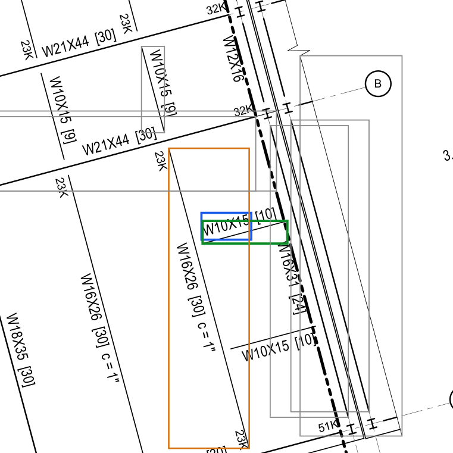
| ID | kind | derivation | len | dist | rank | score |
|---|---|---|---|---|---|---|
| rnd_raw_p8_1399_a867be18d612 | LINE_MEMBER_CANDIDATE | cap_restore | 73.673 | 0.0 | 1 | 0.8686 |
| rnd_raw_p8_1301_5bbc33a526a9 | LINE_MEMBER_CANDIDATE | reclass_restore | 260.899 | 0.0 | 2 | 0.7672 |
| rnd_raw_p8_1360_7199b5f5d5e5 | LINE_MEMBER_CANDIDATE | reclass_restore | 253.679 | 15.91 | 5 | 0.5757 |
| rnd_raw_p8_1300_5f9e3f871947 | LINE_MEMBER_CANDIDATE | retained_member | 253.679 | 33.31 | 6 | 0.4664 |
| rnd_raw_p8_1275_09a4936ab405 | LINE_MEMBER_CANDIDATE | reclass_restore | 241.512 | 18.31 | 3 | 0.6653 |
| rnd_raw_p8_1277_737c2c6faef8 | LINE_MEMBER_CANDIDATE | reclass_restore | 259.531 | 18.31 | 4 | 0.66 |
| rnd_raw_p8_1286_88fce0a03302 | LINE_MEMBER_CANDIDATE | cap_restore | 75.011 | None | None | None |
| rnd_raw_p8_1582_4573fc0b77bf | LINE_MEMBER_CANDIDATE | retained_member | 330.731 | 40.99 | 7 | 0.4338 |
| rnd_raw_p8_1587_30dd49c2221a | LINE_MEMBER_CANDIDATE | retained_member | 330.731 | None | None | None |
| rnd_raw_p8_1400_a64113f84b70 | LINE_MEMBER_CANDIDATE | cap_restore | 73.79 | None | None | None |
| rnd_raw_p8_1302_189e6c134034 | LINE_MEMBER_CANDIDATE | reclass_restore | 261.015 | 44.26 | 8 | 0.4319 |
Classification: B (MEDIUM) · new_status: VALID_MEMBER_NOW_VISIBLE
Old gold: NO_VALID_MEMBER · G9: ASSOCIATED ·
selected: rnd_raw_p8_1484_19ed80f9fdf5 ·
best: rnd_raw_p8_1484_19ed80f9fdf5
Label sits on W16X26 joist; G8 reclass recovers that stroke (was dimension). Nearby longer wall/infill strokes compete but selected matches under-label raw_trace reclass of the joist.
On-label joist recovered; wall beam was the old false overlay.
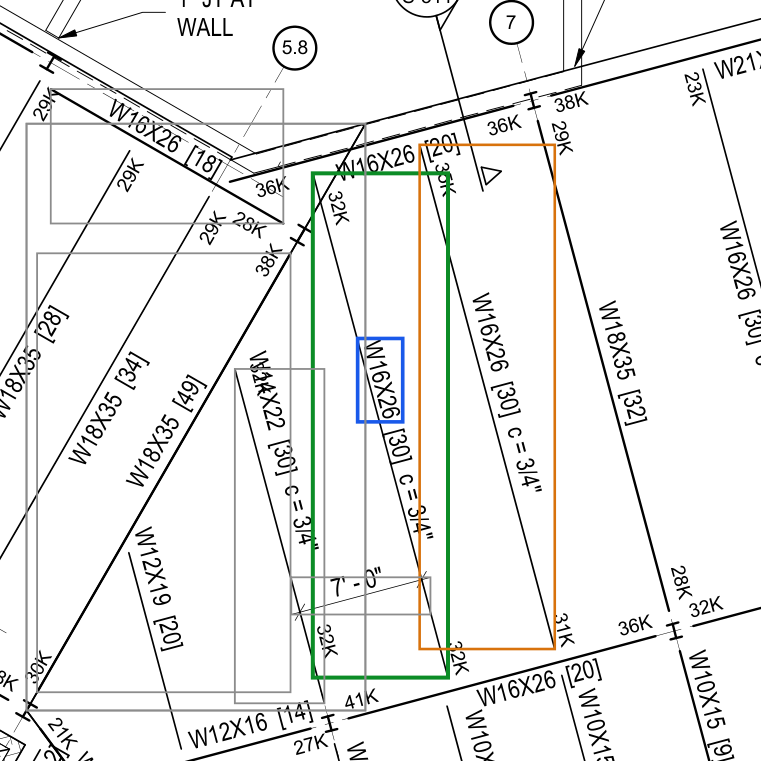
| ID | kind | derivation | len | dist | rank | score |
|---|---|---|---|---|---|---|
| rnd_raw_p8_1484_19ed80f9fdf5 | LINE_MEMBER_CANDIDATE | reclass_restore | 261.015 | 0.0 | 1 | 0.8797 |
| rnd_raw_p8_1326_cea5e757337b | LINE_MEMBER_CANDIDATE | reclass_restore | 261.015 | 8.47 | 2 | 0.7236 |
| rnd_raw_p8_1485_156e44d25c24 | LINE_MEMBER_CANDIDATE | retained_member | 173.049 | 16.64 | 3 | 0.6842 |
| rnd_raw_p8_1012_98df7602bd9e | LINE_MEMBER_CANDIDATE | reclass_restore | 338.812 | 0.0 | 4 | 0.66 |
| rnd_raw_p8_1026_fa500cc74c9c | LINE_MEMBER_CANDIDATE | reclass_restore | 338.812 | 0.0 | 5 | 0.66 |
| rnd_raw_p8_1293_5e2f730bed81 | LINE_MEMBER_CANDIDATE | reclass_restore | 253.435 | 33.56 | 6 | 0.5174 |
| rnd_raw_p8_1493_d210661441dd | LINE_MEMBER_CANDIDATE | reclass_restore | 134.301 | None | None | None |
| rnd_raw_p8_3330_b79e1eb5ab00 | LINE_MEMBER_CANDIDATE | cap_restore | 72.042 | None | None | None |
| rnd_raw_p8_3357_bafd8b8dc00a | LINE_MEMBER_CANDIDATE | retained_member | 90.787 | 75.54 | 8 | 0.3671 |
| rnd_raw_p8_1294_4e2b694a2be6 | LINE_MEMBER_CANDIDATE | reclass_restore | 253.679 | 67.51 | 7 | 0.4131 |
| rnd_raw_p8_1486_5bfecaab0704 | LINE_MEMBER_CANDIDATE | reclass_restore | 146.852 | None | None | None |
| rnd_raw_p8_1494_7c1a1e740815 | LINE_MEMBER_CANDIDATE | reclass_restore | 261.503 | None | None | None |
Classification: C (MEDIUM) · new_status: MULTIPLE_VALID_CANDIDATES
Old gold: NO_VALID_MEMBER · G9: ASSOCIATED ·
selected: rnd_raw_p8_1496_77117ad76f03 ·
best: None
Parallel W18 bay with ≥4 same-scale recovered strokes at near-zero label distance and thin margin. Member geometry is present, but ownership of one specific joist is not deterministic.
Dense parallel W18s; multiple plausible joist candidates.
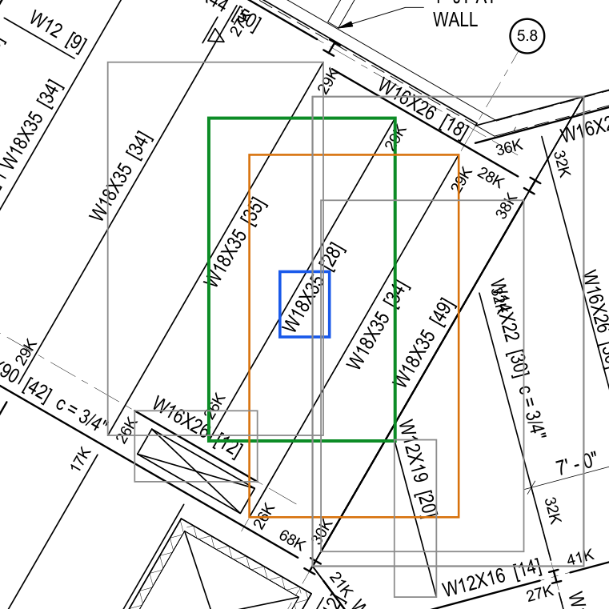
| ID | kind | derivation | len | dist | rank | score |
|---|---|---|---|---|---|---|
| rnd_raw_p8_1496_77117ad76f03 | LINE_MEMBER_CANDIDATE | reclass_restore | 232.895 | 0.0 | 1 | 0.8362 |
| rnd_raw_p8_1494_7c1a1e740815 | LINE_MEMBER_CANDIDATE | reclass_restore | 261.503 | 0.0 | 2 | 0.7706 |
| rnd_raw_p8_1338_4cd2ddf31320 | LINE_MEMBER_CANDIDATE | reclass_restore | 269.243 | 0.0 | 3 | 0.7147 |
| rnd_raw_p8_1293_5e2f730bed81 | LINE_MEMBER_CANDIDATE | reclass_restore | 253.435 | 0.0 | 4 | 0.6745 |
| rnd_raw_p8_1012_98df7602bd9e | LINE_MEMBER_CANDIDATE | reclass_restore | 338.812 | 0.0 | 5 | 0.66 |
| rnd_raw_p8_1026_fa500cc74c9c | LINE_MEMBER_CANDIDATE | reclass_restore | 338.812 | 0.0 | 6 | 0.66 |
| rnd_raw_p8_1365_2df9769d7b24 | LINE_MEMBER_CANDIDATE | retained_member | 101.733 | None | None | None |
| rnd_raw_p8_1495_2d42c14022d1 | LINE_MEMBER_CANDIDATE | cap_restore | 88.547 | 48.225 | 7 | 0.415 |
| rnd_raw_p8_1020_c6050030c5f1 | LINE_MEMBER_CANDIDATE | cap_restore | 74.243 | 59.644 | 8 | 0.3665 |
| rnd_raw_p8_1635_3073e659fbc9 | LINE_MEMBER_CANDIDATE | cap_restore | 74.243 | None | None | None |
| rnd_raw_p8_1638_f899bb3709a7 | LINE_MEMBER_CANDIDATE | cap_restore | 76.402 | None | None | None |
| rnd_raw_p8_1639_c79cbc802513 | LINE_MEMBER_CANDIDATE | cap_restore | 76.39 | None | None | None |
Classification: B (HIGH) · new_status: VALID_MEMBER_NOW_VISIBLE
Old gold: NO_VALID_MEMBER · G9: ASSOCIATED ·
selected: rnd_raw_p18_5045_9d434832f314 ·
best: rnd_raw_p18_5045_9d434832f314
Leader points to the embed plate. G9 selects the CAP-restored tip stroke (tip_distance=0) that coincides with the plate edge; that stroke was absent from the retained CAP set. Old gold overlays were studs/rebar, not the plate.
Leader tip lands on recovered plate-edge stroke (G9 green + purple tip).
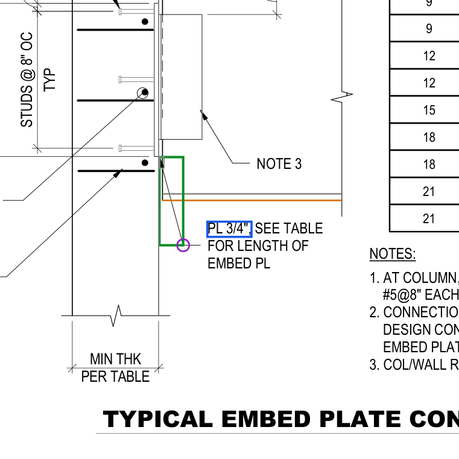
| ID | kind | derivation | len | dist | rank | score |
|---|---|---|---|---|---|---|
| rnd_raw_p18_4362_a0e4c7603f0c | LINE_MEMBER_CANDIDATE | reclass_restore | 148.68 | 17.66 | 2 | 0.6075 |
| rnd_raw_p18_4364_f87d14b4d545 | LINE_MEMBER_CANDIDATE | reclass_restore | 148.68 | 23.06 | 4 | 0.5638 |
| rnd_raw_p18_5045_9d434832f314 | LINE_MEMBER_CANDIDATE | cap_restore | 75.684 | 20.04 | 1 | 0.7367 |
| rnd_raw_p18_4125_49c8e63a5f1f | LINE_MEMBER_CANDIDATE | retained_member | 402.72 | 40.44 | 3 | 0.5973 |
| rnd_raw_p18_5043_d58e12abeb20 | LINE_MEMBER_CANDIDATE | cap_restore | 21.401 | 57.101 | 5 | 0.3031 |
| rnd_raw_p18_4368_cc56a7a15490 | LINE_MEMBER_CANDIDATE | retained_member | 103.56 | None | None | None |
| rnd_raw_p18_4123_0e0ea0f7a183 | LINE_MEMBER_CANDIDATE | retained_member | 127.08 | None | None | None |
| rnd_raw_p18_4121_22a901dcf3fe | LINE_MEMBER_CANDIDATE | retained_member | 127.08 | None | None | None |
| rnd_raw_p18_5208_c579db3bee1d | LINE_MEMBER_CANDIDATE | retained_member | 158.4 | None | None | None |
| rnd_raw_p18_5034_61b21a5cbb4f | LINE_MEMBER_CANDIDATE | cap_restore | 21.475 | None | None | None |
| rnd_raw_p18_4369_518e1aefd955 | LINE_MEMBER_CANDIDATE | retained_member | 103.56 | None | None | None |
| rnd_raw_p18_4381_bbc6cc6bf77b | LINE_MEMBER_CANDIDATE | reclass_restore | 94.56 | None | None | None |
Classification: D (HIGH) · new_status: CORRECT_MEMBER_EXISTS_BUT_G9_SELECTED_WRONG_ONE
Old gold: NO_VALID_MEMBER · G9: ASSOCIATED ·
selected: rnd_raw_p24_480_d0c0ca5e54d7 ·
best: raw_p24_10_9d8fbf0dfe5b#seg1
Leader targets the small L6 relieving angle. G9 ASSOCIATED a 405pt vertical wall/hatch line (on_label_retained). Short plate/angle segments exist in G8 (rank-2 vertex_split seg from tip plate_or_symbol; additional CAP short strokes). Selected geometry is clearly the long brick/wall line, not the angle.
Blue label L6x3-1/2x3/8; selected long vertical wall; short angle segments available near tip.
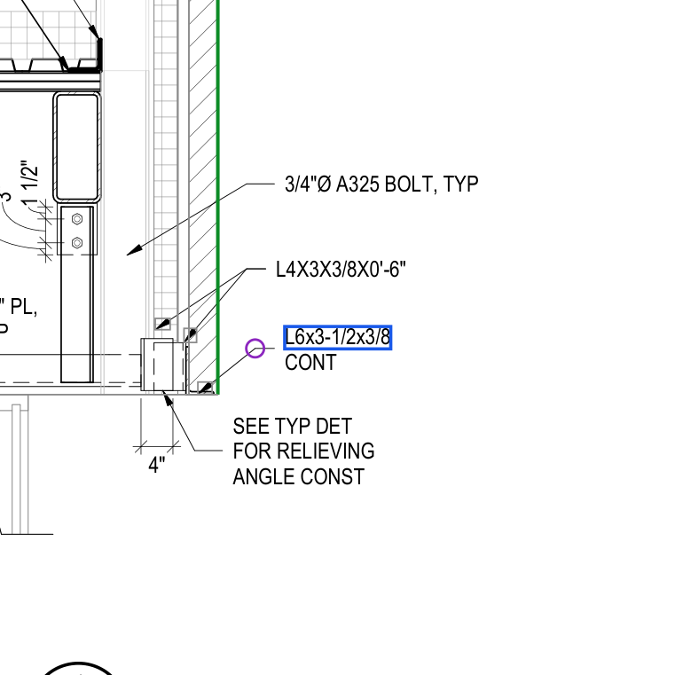
| ID | kind | derivation | len | dist | rank | score |
|---|---|---|---|---|---|---|
| rnd_raw_p24_480_d0c0ca5e54d7 | LINE_MEMBER_CANDIDATE | on_label_retained | 405.0 | 37.68 | 1 | 0.6002 |
| rnd_raw_p24_567_062ff3501beb | LINE_MEMBER_CANDIDATE | reclass_restore | 140.64 | 45.655 | 4 | 0.3801 |
| rnd_raw_p24_4086_cfa746f71182 | LINE_MEMBER_CANDIDATE | cap_restore | 21.433 | 44.99 | 3 | 0.3803 |
| rnd_raw_p24_4220_f4e088ea98aa | LINE_MEMBER_CANDIDATE | cap_restore | 21.585 | 49.68 | 6 | 0.3461 |
| rnd_raw_p24_478_77a1ccd9dec6 | LINE_MEMBER_CANDIDATE | retained_member | 405.0 | None | None | None |
| rnd_raw_p24_486_b2fd13b212ca | LINE_MEMBER_CANDIDATE | retained_member | 375.72 | None | None | None |
| rnd_raw_p24_161_9eb6b13bab73 | LINE_MEMBER_CANDIDATE | retained_member | 375.72 | None | None | None |
| rnd_raw_p24_4223_e780326d754b | LINE_MEMBER_CANDIDATE | cap_restore | 21.548 | None | None | None |
| rnd_raw_p24_163_ed240f76fbb6 | LINE_MEMBER_CANDIDATE | retained_member | 373.44 | None | None | None |
| rnd_raw_p24_4226_99fe5ca951e2 | LINE_MEMBER_CANDIDATE | cap_restore | 21.606 | None | None | None |
| rnd_raw_p24_4231_8ef0241f0e56 | LINE_MEMBER_CANDIDATE | cap_restore | 78.512 | 45.596 | 7 | 0.3422 |
| rnd_raw_p24_482_4aa20eae63c4 | LINE_MEMBER_CANDIDATE | retained_member | 373.44 | None | None | None |